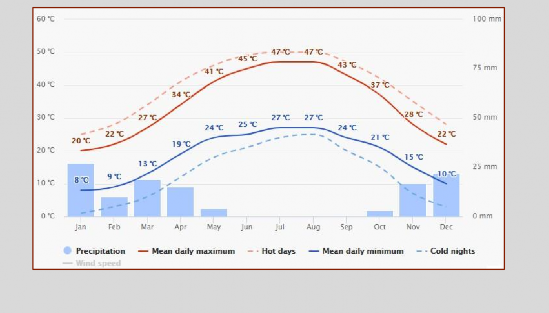
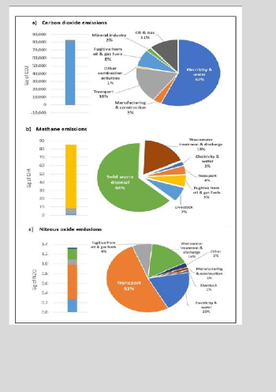
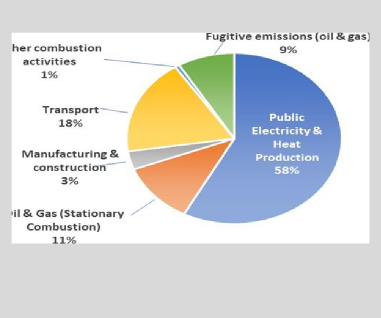

The State of Kuwait has updated the document of the Nationally Determined Contributions and submitted it to the secretariat of the Convention to share worldwide: the process of combating climate change based on sustainable development plans and programs at the national level for the period from 2015 to 2035.
Based on the principles of the United Nations Framework Convention on Climate Change, the provisions of the Paris Agreement and the Sustainable Development Goals (Agenda 2030 for Sustainable Development), the State of Kuwait seeks to transition to a low-emissions carbon-equivalent economic system based on its future business in the principles of a circular economy of carbon in addition to legislation and laws in the areas of mitigation and adaptation Climate change based on the expectations of its future emissions according to business as usual patterns for the period between 2015-2035. In this period, the State of Kuwait has been seeking to avoid emitting the equivalent of 7.4% of its total emissions in 2035 with unconditional national efforts. Moreover, this percentage of emissions reduction represents the country’s maximum ambition which the country of Kuwait had based on national conditions and economic, political, social and health developments during the Corona pandemic during the years 2020 and 2021 and the resulting stagnation of the global economy, and the state’s efforts to pandemic the virus on the other.
The State of Kuwait is considered one of the first countries to sign the United Nations Framework Convention on Climate Change; it joined the Convention on 28 Dec.1994 and entered into force on 28 Mar. 1995, and the state of Kuwait ratified Kyoto Protocol under the United Nations Framework Convention on Climate Change on 11 Mar. 2005 and entered into force on 9 Jun. 2005. The State of Kuwait shares the concerns of the international community in limiting the negative impacts of climate change, it recognizes that the global nature of climate change calls for maximum cooperation and participation in an effective international response in implementing the terms of the United Nations Framework Convention on climate change (UNFCCC) from all countries of the world in accordance with common but differentiated responsibilities as stated in Article 4 paragraph 1 , which says: “All Parties, taking into account their common but differentiated responsibilities and their specific national and regional development priorities, objectives and circumstances."
The State of Kuwait also signed the Paris Climate Agreement on 4/22/2016 and submitted its first contribution document at the national level after ratification on 4/23/2018 based on the information, results and analyses contained in the first national communication document submitted by the state in 2012. Moreover, based on the latest documents submitted by the State of Kuwait to the Secretariat of the United Nations Framework Convention on Climate Change recently, where the second national communication (SNC) was submitted in July 2019, and the document of the first Biennial update report (BUR) was submitted in September 2019, in addition to the National Adaptation Plan (NAP) in February 2021 Therefore, the State of Kuwait has updated the first national contributions document based on the latest information contained in these documents related to the inventory of emissions and ways to adapt to the negative effects of climate change on the state's sectors.
In this context the standards of sustainable development of the State of Kuwait will be taken into consideration, as it is a developing country with a single source of income as the Convention stated in Article 4 .8, which says: " In the implementation of the commitments in this Article, the Parties shall give full consideration to what actions are necessary under the Convention, including actions related to funding, insurance and the transfer of technology, to meet the specific needs and concerns of developing country Parties arising from the adverse effects of climate change and/or the impact of the implementation of response measures” and in particular on “Countries whose economies are highly dependent on income generated from the production, processing and export, and/or on consumption of fossil fuels and associated energy-intensive products” as mentioned in paragraph (h).
Kuwait is located in the Northeast of the Middle East and North Africa between latitudes 28o 30" and 30o 5" and longitudes 46o 33" and 48o 30" in the east. The total area of Kuwait is 17,818 km2, including the nine unpopulated islands in the Arabian Gulf region. Kuwait's Government is considered constitutional state, where its Constitution has a democratic appeal which is developing rules that controls legislative, executive, and judicial authorities.
The State of Kuwait is a tropical dry and subtropical desert with an extremely arid climate. Its annual precipitation ranges between 75 and 150 mm, but the actual precipitation is 600 mm per year. There are large and noticeable differences in temperature between summer and winter in Kuwait. In summer, the temperature can reach 48 degrees Celsius and an average of 44 degrees Celsius, and on July 21, 2016, the temperature reached its highest level ever, as the temperature reached 54 degrees Celsius in the north of the State of Kuwait, and it is worth noting that it was the highest temperature recorded throughout history in the Eastern Hemisphere and Asia, according to the World Meteorological Organization report issued in June 2019.
Due to its relatively northern location in the Gulf region, the northern winds blowing from Iran and Iraq ensure that the temperature of Kuwait is lower than that of other Arab Gulf states. Precipitation occurs mostly from October to April.
During the summer, which is much longer than the winter, violent northwest dust storms dominate most weather events during the months of March through April, and in the later months of hot summer, between May and September, sandstorms are more likely, and southeast winds blow during the period From September to October from the Arabian Gulf, hence the humidity during these months (Second National Communication, 2019). By the end of October, the cycle of winter and summer begins again, as the temperature drops to -6°C during the night. The daytime is usually characterized by higher temperatures ranging from 10 to 17 degrees Celsius.
According to its climate, the State of Kuwait suffers the lack of fresh water, with an annual precipitation ranges between 75 and 150 mm, which is low respectively. (Figure. 1)
Kuwait relies entirely on sea water desalination process to obtain fresh water where is 93% from the water supply comes from the desalination of sea water, while the remaining percentage comes from non-generated groundwater due to scarcity of rainfall. However, the seawater desalination process consumes high energy with an adverse impact on marine and coastal ecosystems.
Global sea levels could rise by 1-3 meters during this century according to the Intergovernmental Panel on Climate Change (IPCC). Due to the nature of the low-lying coastal of Kuwait, it is at risk to sea levels rise associated with climate change. With a rise of (0.5 - 2 meters) at sea level. Kuwait could lose 1.4-3% of its coastal territory, which affects 5% of its GDP.

Kuwait’s population reached 4411124 in 2016 with a steady increase over the past two decades by growth rate around 4.1%. The expected increase in population growth rate is combined with urban development and rapid provision of basic services to the population. In the light of the global decline in oil prices and the high cost of subsidies ratio in energy, water and housing prices, the State of Kuwait is facing many developmental challenges, including diversifying, and enhancing work opportunities that provides safe working environments for citizens and residents, urban planning and housing, infrastructure and promoting national capacities to monitor and implement developmental plans.
It is worth mentioning that the state of Kuwait is considered a country with a single source of income, it relies mainly on the extraction and sale of oil in its general budgets. Thus, the state's economy is vulnerable to oil prices fluctuations in supply and demand, and Kuwait's industrial base is based on the extraction, refining, and exporting of oil with an export revenue of more than 90% of the country total revenues, the value of the oil contribution to GDP represents 51-55%. Also, Kuwait is entirely dependent on fossil fuels for energy production by 83.5% of liquid oil and 16.5% of natural gas.

The State of Kuwait issued an update of its greenhouse gas emissions inventory for 2016. The total greenhouse gas emissions in 2016 amounted to 86,336,448 gigagrams of carbon dioxide, including 82,556.572 gigagrams of energy; 1,932,156 gigagrams of industrial processes and product use; 154,371 Gg of agriculture, 13,932 Gg of forest and other land use and 1,706,539 Gg of waste. (Figure.2).
Emissions of perfluorocarbons, hydrofluorocarbons and Sulphur hexafluoride in Kuwait are very small because products containing these gases are not produced in the country. The (TIER-1) approach of the IPCC Guidelines was used in the calculations for all categories of reports, given that Kuwait does not have national emission factors and does not have detailed data to calculate the list of gases. (Source: BUR- 2019).
The energy sector is one of the largest emitters of greenhouse gases, with energy-related greenhouse gas emissions in 2016 broken down by activity. Emissions from the production of electricity and desalinated water are mainly related to the combustion of natural gas, and petroleum products showed the highest percentage of greenhouse gas emissions, about 58 percent. The contribution of pre-production and post-production activities in the oil and gas industry to total greenhouse gas emissions is about 11%. Transportation activities are based largely on the use of gasoline and diesel oil and represent about 18% of the total emissions from energy-consuming activities. Fugitive emissions of methane, a gas with a high global warming potential, represent about 9% of all greenhouse gas emissions in the energy industries sector. Other combustion activities in manufacturing and construction accounted for the remaining 4%, (Figure.3).

The State of Kuwait is ambitious to move to a low carbon equivalent economy and to avoid the increase in greenhouse gas emissions compared to business as usual patterns, based on plans and development projects in the country for the period from 2015 to 2035, the state of Kuwait is seeking to achieve this objective on a voluntary basis by implementing some projects and enacting laws and legislation in the areas of mitigation and adapting to the adverse effect of climate change, which are mutually beneficial to mitigation. According to their national economic circumstances, and the state of Kuwait therefore seeks to avoid emission of greenhouse gases equivalent to 7.4% of its total future emission on 2035 through its national efforts. The State of Kuwait also hopes that financial technical and technological support will be provided through the mechanisms of the convention in particular market, non- market mechanisms, and cooperative approach under article 6 of the Paris Agreement, to ensure the sustainability of future projects and to achieve greater benefit for emission reduction to implement future contribution.
The State of Kuwait seeks to avoid increasing greenhouse gases emissions from 2015 to 2035 based on business-as-usual patterns (BAU), by adopting the circular carbon economy principle in development projects and plans among the sectors most contributing to greenhouse gas emissions, the energy sector it represents 96% of the total state emissions, with a total state emission of 142290750 tons in 2035 and these projects are:
|
Carbon circular economy pillars |
project |
Year of implementation |
Amount of reduction- ton |
|
Emission reduction |
Sidra project- renewable energy |
2015 |
13,700 |
|
Improving energy distribution efficiency -1 |
2015 |
134,949 |
|
|
Improving energy distribution efficiency -2 |
2015 |
112,700 |
|
|
Electricity production by renewable energy |
2017 |
115,000 |
|
|
Improving energy distribution efficiency -3 |
2019 |
219,700 |
|
|
Improving energy distribution efficiency -4 |
2020 |
351,800 |
|
|
Production of 850 MW of combined cycle |
2020 |
3,500,000 |
|
|
70% of the liquefied gas in energy production is gas and the other 30% is fuel |
2022 |
3,000,000 |
|
|
Production of 250 MW of combined cycle |
2024 |
1,000,000 |
|
|
Decarbonization |
Cultivating of Mangroves |
2018 |
50,000 Annual increase of +50,000 |
|
Carbon Reuse |
Industrial Application |
2015 |
10,950 |
|
Carbon capture and storage |
2015 |
100,000 |
|
|
Carbon Capture and storage (green carbon) |
2022 |
216,000 |
|
|
Percentage of total state emission in 2035 |
7.4% |
||
The state of Kuwait seeks to move to a low-carbon economic system that is adoptable to the adverse effects of climate change to promote and protect its natural resources and achieve sustainable development standards, and it seeks to adapt to the effects of climate change from rising temperatures, scarce rainfall, rising sea levels, limited water sources, increasing intensity of dust storms and their impact on the economic, social and health sector.
The Environment Public Authority has established the electronic environmental control information system for the protection of marine life.
Establishment of a regional database and information center to support fisheries management (Food and Agriculture Organization UN/ The Public Authority of Agriculture Affairs and Fish Resources)
Creation of terrestrial and marine nature resources (EPA)
\Development and implementation of water resources programs
/ Kuwait Institute for Scientific Research.
Building desalination plants.
Rationalization of water consumption using modern techniques.
Definitions of collected water and water conservation.
Assessment of the technical needs of water resources.
Using wastewater that comes from wastewater processing stations.
Establishment of the electronic environmental control information system for marine life in the state of Kuwait (EPA).
Establishment of the costal information system.
Coastal zone management program (EPA)
Common Alerting Protocol (Meteoritical Public Administration)
The State of Kuwait has initiated formal producers to study the law of removal of subsidies for gasoline from the beginning of 2016 and gradual removal of subsidies for electricity and water in commercial and industrial sectors, and this contributes significantly to rationalization of greenhouse gas emission.
The Kuwaiti National Assembly also adopted Environmental protection act no.42 of 2014, as amended by act no.99 of 2015, the aim of this act is to protect the environment and all its sources, controlling pollution, developing the natural resources, protecting the society and the human health and all living creatures. The act consists of 181 articles dealing with all issues relating to the protection of the earth, costal, and air environments from pollution, the biological diversity, penalties and environmental damages amends, and any related general law.
The Environmental Protection Law 42/2014 deals directly and indirectly with the energy sector. Article (122) and (123) of the Environmental Protection Law stated the necessity of using energy-saving systems in the new state facilities. The law also prohibited the import of any devices or equipment that do not match with energy saving specification.
The Environmental Protection Law in Article (111) urged the relevant state authorities to develop environmental strategies, plans and work programs related to the scope of their work.
The articles of the law show the state’s interest and direction in reducing greenhouse gas emissions in the energy sector by seeking to improve energy consumption management by establishing systems and rules for the efficiency of the devices used and the efficiency of energy consumption in buildings (building materials and design, air conditioning systems and lighting, etc.).
The environmental law also paves the way for the development, adoption, and implementation of a national strategy to reduce the state’s consumption of energy and diversify energy sources, especially increasing the percentage of clean energies, in order to achieve the vision of His Highness the late Amir of the State of Kuwait, where His Highness announced the State of Kuwait’s endeavor to increase its energy needs from renewable energy sources by 2030.
The Environmental Protection Law No. 42 of 2014 and its amendments accorded paramount importance in some of its articles to issues related to adapting to the negative effects of climate change, as it regulated the ways of using and consuming natural resources in the field of protecting the land. Articles (40) and (41) of the law discussed regulating the camping process and land use in grazing or any other activities that may harm the soil, which contributes to reducing the phenomenon of desertification and soil vulnerability. In addition, articles (102) and (103) are specified for managing natural reserves to maintain biodiversity. Regarding water resources management Articles (88) and (89) have set the foundations to develop a program for water management in the country and the standards, regulations for water conservation to adapt to the scarcity of water resources in the country. To adapt to the expected rise in sea level and its impact on the coasts of the country articles (66) and (99) of the Law are dedicated for the marine environment and the need to create a national network for monitoring and regulating the marine environment and conducting studies to monitor sea level rise. Considering that the State of Kuwait suffers from numerous crises and natural disasters such as sand and dust storms and flash floods waves, the law established Article (118), which states the needs to prepare emergency plans and crises and natural disasters management plans.
Regarding food security, the state has issued laws related to entirely prevent fishing in Kuwait’s bay to maintain biodiversity and fish stocks. Furthermore, there are laws specialized in banning fishing of some species of fish and shrimp in the territorial waters and allows it only in specified seasons to prevent the depletion of fish stocks.
The legislator also seeks through the Environment Protection Law No. 42/2014, as amended some of its provisions in Law No. 99/2015 to promote environmental culture in Kuwait society and spread information relating to the environment for public to change some the behavioral patterns among the citizens and residents to increase public awareness with the concept of natural resources sustainability and the proper usage of it.
For the state of Kuwait to be able to implement the procedures of mitigating greenhouse gas emissions and adapting to climate change impacts and achieve sustainable development criteria, Kuwait needs the availability of technological and financial support and build national capacities from centers, committees and mechanisms included in the framework agreement such as technological mechanisms consisting of the Technology Executive Committee (TEC) and the Climate Technology Centre & Network (CTCN), as well as the Green Climate Fund (GCF). In accordance with provisions of Article (4.7) of the Framework Convention which states that the extent to which the developing countries fulfill its obligations under the Convention will depend on the developed party’s providence of support to developing parties in the field of finance, technology transfer, to ensure an effective global cooperative action on climate change.
The State of Kuwait will start preparing a low-emissions development strategy 2050 in accordance with the requirements of the Paris climate agreement, based on the principle of a circular carbon economy. And the state of Kuwait seeks to combine the outputs of this strategy with the new developing plans by endorsing new projects to serve the Kuwait vision 2035 until 2050.
The state of Kuwait assigns great importance to international efforts that deal with global warming and believe that addressing this phenomenon is a common but differentiated responsibility among the countries of the world. Therefore, the State of Kuwait is keen on increasing its capacity in dealing with issues related to climate change simultaneously with its efforts in adapting with the negative impacts of this phenomenon and its consequences on the social and economic aspects.
Although it did not participate in causing this phenomenon, the geographical location of the State of Kuwait made it vulnerable to the effects of climate change, which appeared to be very apparent in recent years through a significant rise in temperatures, the scarcity of rain, and the increase in dust and dust storms that cause life in the country to stop and damage the public health of citizens. And residents, which contributes to increasing losses and economic burdens on the state, in addition to the possibility of the state losing parts of its coastal zone because of rising sea levels 1.4-3% of its coastal lands, affecting 5% of its GDP.
The State of Kuwait will suffer from economic and social consequences of negative impacts of response measures, where Kuwait is considered one of the countries that its economy dependent on oil and will be affected negatively from international policies and procedures of the UNFCCC. The Secretariat of OPEC as well as many international consultancy entities have prepared several studies indicating in its wholeness that because of the intensive focus on fossil fuel sectors, particularly oil and oil products.
Given the national circumstances of the state of Kuwait, which is currently facing numerous economic, social, and environmental challenges because of the outbreak of the corona pandemic during the past two years in addition to the growing population and the increasing demand of resources, particularly water and energy, which is accompanied with the decline in the national income because of mitigation policies of developed countries. Also taking into consideration the state's responsibility to provide employment opportunities, housing and to maintain the citizen's living standard, the contribution of the State of Kuwait determined at the national level to avoid the equivalent of 7.4% of its emissions on 2035 is considered very ambitious and fair.
The State of Kuwait provided an update of its Nationally Determined Contributions for the period from 2015 to 2035, as information was extracted from the latest documents submitted by the State of Kuwait to the Secretariat of the United Nations Framework Convention on Climate Change, represented in the second national communication (SNC) July 2019, the first Biennial update report (BUR) September 2019, and the national Adaptation plan (NAP) February 2021.
The update of the first contribution document has been prepared based on the development projects and plans of the country and based on the principle of the circular carbon economy, which achieves cooperation between the government sector and the private sector in the country. The State of Kuwait is also counting on market, non-market mechanisms and cooperative Approach within Article six of the Paris Agreement to achieve greater ambition in reducing greenhouse gas emissions and including them in the upcoming national contributions, in addition to the means of implementation (financial and technical support and capacity building).
and its importance in enhancing the state’s ability to reduce emissions and adapt to their negative effects on the country’s main sectors, and the State of Kuwait reserves the right to reconsider this document based on future developments related to national conditions and the state’s general policy, or in the event that the agreement or decisions of the relevant conferences of the parties are amended in a manner that includes rules or provisions that differ with the assumptions under which this document was presented.
Annex: Information to facilitate clarity, transparency and understanding
|
1. Quantifiable information on the reference point (including, as appropriate, a base year) |
|
|
a. Reference year(s), base year(s), reference period(s) or other starting point(s) |
Base year 2015, GHG 2035 Business-as- Usual Emissions Projection. |
|
b. Quantifiable information on the reference indicators, their values in the reference year(s), base year(s), reference period(s) or other starting point(s), and, as applicable, in the target year |
Kuwait's net GHG emissions in 2035 relative to BAU are estimated to be total of 142,290,750MTCO2e. |
|
c. For strategies, plans and actions referred to in Article 4, paragraph 6, of the Paris Agreement, or polices and measures as components of nationally determined contributions where paragraph 1(b) above is not applicable, Parties to provide other relevant information |
Not applicable. |
|
d. Target relative to the reference indicator, expressed numerically, for example in percentage or amount of reduction |
Reduction of 7.4% in 2035 relative to BAU, with total GHG emissions capped to 131,715,950 MTCO2e in 2035, with amount of reduction of 10,574,800 MTCO2e |
|
e. Information on sources of data used in quantifying the reference point(s) |
The reference indicator will be quantified based on national total GHG emissions in 2015 State of Kuwait reported on the second national communication (SNC), first biannual updated report(1BUR) and the National Adaptation plan (NAP). Also, the vision of “new Kuwait 2035” |
|
f. Information on the circumstances under which the Party may update the values of the reference indicators |
The base year for the 2035 BAU emissions is predicted at about 142,290,750MTCO2e, assuming a sustained moderate GDP growth rate of 1.8% per year, a total population of 7250523.871million by 2035. The base year for 2035 may be recalculated and updated based on the covid-19 pandemic and further methodological improvements. The Biennial Transparency Report (BTR) will provide details on updates made. |
|
2. Time frames and/or periods for implementation |
|
|
a. Time frame and/or period for implementation, including start and end date, consistent with any further relevant decision adopted by the CMA; |
2015-2035 |
|
b. Whether it is a single-year or multi- year target, as applicable. |
Single-year target in 2035. |
|
3. Scope and coverage |
|
|
a. General description of the target; |
Kuwait's economic target to reduce 7.4% compared to BAU by 2035 covers sectors of (Energy, IPPU, Agriculture, Forestry and Other Land Use), where the energy sector is the primary emission source. |
|
b. Sectors, gases, categories and pools covered by the nationally determined contribution, including, as applicable, consistent with IPCC guidelines; |
Sectors: Energy, IPPU, Agriculture, Forestry and Other Land Use, waste 2035 Carbon Control Target Plan Gases:
|
|
c. How the Party has taken into consideration paragraphs 31(c) and (d) of decision 1/CP.21; |
Kuwait’s NDC is an economy-wide target that includes all categories of anthropogenic emissions or removals. The energy sector emitted the most greenhouse gases in 2015, making up 75% of total emissions. This emission pattern will continue in the next decade, primarily due to the emissions from the oil and gas supply chain and electricity generation using natural gas and diesel. By 2025, the planned renewable power plants and energy efficiencies will reduce emissions from electricity generation. Over the following years. |
|
d. Mitigation co-benefits resulting from Parties’ adaptation action and/or economic diversification plans, including description of specific projects, measures and initiatives of Parties’ adaptation action and/or economic diversification plans. |
Kuwait's 2050 strategy towards a low carbon economy based on a circular carbon economy. |
|
4. Planning process |
|
|
a. Information on the planning processes that the Party undertook to prepare its nationally determined contribution and, if available, on the Party’s implementation plans, including, as appropriate:
|
The enhanced target results from a comprehensive impact evaluation, analysis of the future vision and strategies 2050, and stakeholder feedback gathered through public consultation. The standards of sustainable development for the State of Kuwait were taken into account, as it is a developing country with a single source of income, as approved by the agreement in the eighth item of Article 4, which states: in which actions related to financing, insurance and technology transfer to meet the specific needs and concerns of developing country Parties arising from the adverse effects of climate change and/or the impact of implementing measures to respond to climate change” and in particular on “countries whose economies are highly dependent on income from production, processing, export and/or consumption types of fossil fuels and related energy-intensive products” as mentioned in paragraph (h). The ambition of the State of Kuwait is to transform into a low carbon equivalent economy and avoid increasing greenhouse gas emissions compared to business as usual, based on the country’s development plans and projects for the period from 2015 to 2035, and the state seeks to achieve this goal voluntarily by adopting Working with the principle of a circular carbon economy in dealing with the climate change file in the State of Kuwait by implementing some projects and enacting laws and legislation in the fields of mitigating emissions and adapting to the negative effects of climate change that have common benefits with mitigation, according to its national conditions and economic data. |
|
b. Specific information applicable to Parties, including regional economic integration organizations and their member States, that have reached an agreement to act jointly under Article 4, paragraph 2, of the Paris Agreement, including the Parties that agreed to act jointly and the terms of the agreement, in accordance with Article 4, paragraphs 16–18, of the Paris Agreement; |
Not applicable |
|
c. How the Party’s preparation of its nationally determined contribution has been informed by the outcomes of the global stock take, in accordance with Article 4, paragraph 9, of the Paris Agreement; |
Kuwait's climate change strategy was formulated considering the best available science. The latest reports by IPCC which approved by the conference of parity has served as the basis for the evaluation of the second NDC and IPCC 2006 GHG inventory guidelines. |
|
d. Each Party with a nationally determined contribution under Article 4 of the Paris Agreement that consists of adaptation action and/or economic diversification plans resulting in mitigation co-benefits consistent with Article 4, paragraph 7, of the Paris Agreement to submit information on:
|
The State of Kuwait will suffer from economic and social consequences of negative impacts of response measures, where Kuwait is considered one of the countries that its economy dependent on oil and will be affected negatively from international policies and procedures of the UNFCCC. |
|
5. Assumptions and methodological approaches, including those for estimating and accounting for anthropogenic greenhouse gas emissions and, as appropriate, removals: |
|
|
a. Assumptions and methodological approaches used for accounting for anthropogenic greenhouse gas emissions and removals corresponding to the Party’s nationally determined contribution, consistent with decision 1/CP.21, paragraph 31, and accounting guidance adopted by the CMA; |
The State of Kuwait uses IPCC methodology and guidelines 2006 as guided by 1/CP.21 Article 4, paragraph 13 of the Paris Agreement for the inventory of their GHG emissions and removals. These procedures done as the financial support received. |
|
b. Assumptions and methodological approaches used for accounting for the implementation of policies and measures or strategies in the nationally determined contribution; |
The State of Kuwait will use appropriate methods and assumptions when reporting its progress in implementing the second NDC in its Biennial Transparency Report (BTR) |
|
c. If applicable, information on how the Party will take into account existing methods and guidance under the Convention to account for anthropogenic emissions and removals, in accordance with Article 4, paragraph 14, of the Paris Agreement, as appropriate; |
The State of Kuwait uses IPCC methodology and guidelines 2006 as guided by 1/CP.21 Article 4, paragraph 13 of the Paris Agreement for the inventory of their GHG emissions and removals. |
|
d. IPCC methodologies and metrics used for estimating anthropogenic greenhouse gas emissions and removals; |
Tier 1 method of the IPCC methodologies and guidelines 2006. Metrics: Global warming potential (GWP) values on a 100-year timescale in accordance with IPCC’s Second Assessment Report will be used to calculate CO2 equivalents. |
|
e. Sector-, category- or activity-specific assumptions, methodologies and approaches consistent with IPCC guidance, as appropriate, including, as applicable:
|
Not applicable. There is no forest in the State of Kuwait. But, in the BUR the redaction of emission on Land was -13.190 GgCo2e in 2016. |
|
f. Other assumptions and methodological approaches used for understanding the nationally determined contribution and, if applicable, estimating corresponding emissions and removals, including:
|
The State of Kuwait uses IPCC methodology and guidelines 2006 as guided by 1/CP.21 Article 4, paragraph 13 of the Paris Agreement for the inventory of their GHG emissions and removals for the four sectors (Energy, IPPU, Agriculture, Forestry and Other Land Use, waste) Also, using the default value of emission factors. |
g. The intention to use voluntary cooperation under Article 6 of the Paris Agreement, if applicable. |
Reduction of 7.4% in 2035 relative to BAU voluntary funded, other financial support facilitate from the using of the new mechanism. Furthermore, article 6 of the Paris Agreement is an additional mechanism to achieve cost- efficient emission reductions, facilitate the transfer of carbon mitigation technology, and deliver significant sustainable development benefits. |
|
6. How the Party considers that its NDC is fair and ambitious in light of its national circumstances |
|
|
a. How the Party considers that its NDC is fair and ambitious in the light of its national circumstances; |
The State of Kuwait is a non-annex I party with a vision to shift to a low carbon economy by 2050 and believes that the NDC's ambitious target conforms to Article 2 of the Convention. The NDC is an ambitious economy-wide goal that is consistent with the best available science and evidence. |
|
b. Fairness considerations, including reflecting on equity; |
The State of Kuwait will use appropriate methods and assumptions when reporting its progress in implementing the second NDC in its Biennial Transparency Report |
|
c.How the Party has addressed Article 4, paragraph 3, of the Paris Agreement; |
Kuwait’s enhanced NDC represents a progression of ambition compared to its initial NDC communicated in 2018 upon ratifying the Paris Agreement. |
|
d. How the Party has addressed Article 4, paragraph 4, of the Paris Agreement; |
Not applicable. |
|
e. How the Party has addressed Article 4, paragraph 6, of the Paris Agreement. |
Not applicable. |
|
7. How the NDC contributes towards achieving the objectives of the Convention as set out in its Article 2 |
|
|
a. How the NDC contributes towards achieving the objective of the Convention as set out in its Article 2; |
Kuwait considers the Paris Agreement to be in line with achieving the objective of the Convention as set out in its Article2. Kuwait’s enhanced NDC is consistent with the Paris Agreement and its long-term temperature goal. See 6(a) and 6(b) for more information. |
|
b. How the NDC contributes towards Article 2, paragraph 1(a), and Article 4, paragraph 1, of the Paris Agreement. |
The State of Kuwait attaches great importance to the international efforts aimed at confronting global warming, believes that addressing this phenomenon is a common responsibility among the countries of the world, albeit to varying degrees. Therefore, the State of Kuwait is keen to raise its capabilities in dealing with issues related to climate change, simultaneously with its efforts to adapt with the negative effects of this phenomenon and its consequences in the social and economic dimensions. See 6(a) and 6(b) for more information. |